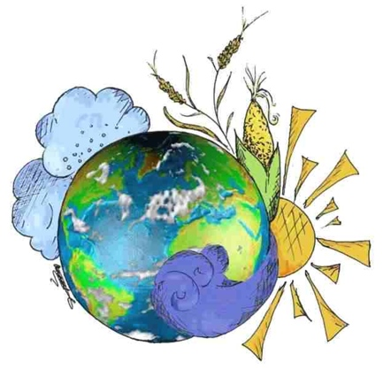
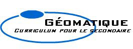

|
 |
Ce site Web a été développé
avec l'appui financier du programme l'Initiative
Le monde en classe fourni par l’Agence canadienne de développement
internationale. Cette initiative Le monde en classe est un nouvel outil de
l’ACDI à l’intention des enseignants et des enseignantes qui
souhaitent encourager les jeunes Canadiens et Canadiennes à explorer le
domaine de la coopération internationale. |
| GeoInsight Corp. | Woodroffe H.S. | ESRI Canada Ltd. | OCDSB |
|
Nous tenons à remercier Claude Brun
del Re, Tanya Barnett, Harold
Moore, le comité du programme d’éducation globale de WIAM, les étudiants
et les étudiantes de Woodroffe High School Trevor Penney, Tina Huynh,
Le Hoa Tan pour leurs efforts
soutenus et leurs contributions à ce projet. Nous tenons aussi à
remercier Chieu Anh Ta et Anna Yodko pour leurs
contributions artistiques. Enfin nous voulons aussi remercier OXFAM
Ottawa, UNAC, Transfair Canada, Halifax Initiative,
PARTNERS in Rural Development, Global Education Network, ESRI Canada, Ottawa-Carleton
District School Board et tous les élèves de la classe de 12ième année et
de CPO 2002-2003 ''Canadians and World Issues: A geographic Analysis'' pour leurs
précieux commentaires sur les activités des modules.
Conception et réalisation du site web: Michael Sullivan |
|
|
©Droit d’auteur, Copyright 2002 Geomatics for High School Curriculum Web Site. Tous droits réservés. |